Entre em Contato
Escolha o canal de sua preferência.
Engenheiro de Telecomunicações especialista no desenvolvimento de sistemas de ponta a ponta: da otimização de firmware de baixo nível (C/C++) à arquitetura de ecossistemas backend de alta concorrência e microsserviços em nuvem (Node.js, TypeScript e AWS). Fluência técnica para atuação em projetos globais complexos.
Projetos de software escaláveis focados em performance, segurança e alta concorrência. Experiência no desenvolvimento Full Stack utilizando frameworks modernos, modelagem de dados relacionais/NoSQL e implantação de soluções em nuvem (AWS) com práticas DevOps.
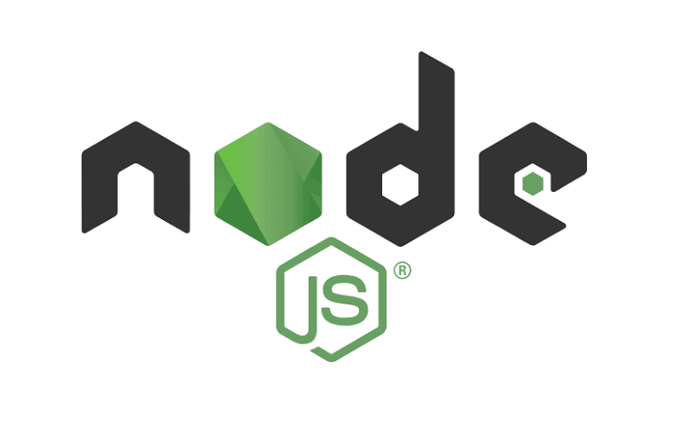
Back-End de Alta Performance e Microsserviços
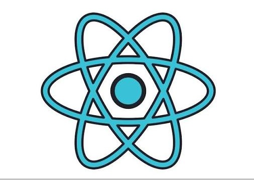
Front-End e Interfaces Dinâmicas
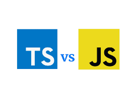
Código Tipado, Seguro e Escalável
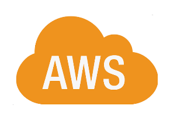
EC2, S3, RDS, Lambda e Soluções Cloud
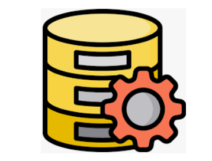
Relacionais (MySQL/PostgreSQL) e NoSQL
Highcharts, Dashboards e Gráficos
Infraestrutura de redes e sistemas distribuídos. Troubleshooting avançado, benchmarking, análise de performance e garantia de alta disponibilidade em ambientes corporativos e Linux/Unix de grande escala.
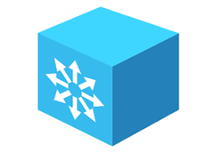
BGP, iBGP, OSPF, IS-IS e Roteamento Estático
Administração de Sistemas (AlmaLinux, Debian Server)
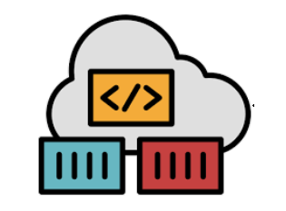
Docker, Kubernetes, Git, GitLab CI/CD e GitHub
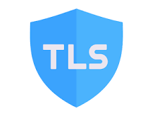
Segurança, Criptografia e Tradução de Endereços
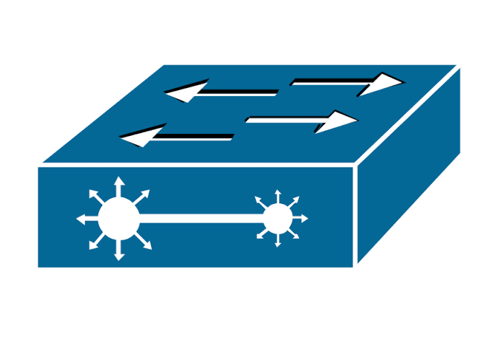
Ethernet, Wi-Fi, Bluetooth, PPP
Engenharia de hardware e firmware de baixo nível para automação residencial, predial (BMS) e industrial. Especialista no desenvolvimento de código altamente otimizado em C/C++ com foco em gestão eficiente de memória, restrição de hardware e protocolos de comunicação industriais para coleta de telemetria em tempo real.
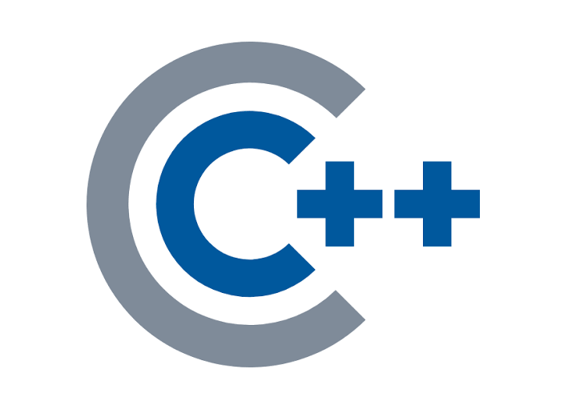
Firmware Resiliente e Gestão Eficiente de Memória
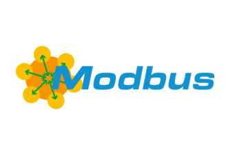
ModBus (RS-232/RS-485), BACnet, KNX e MQTT
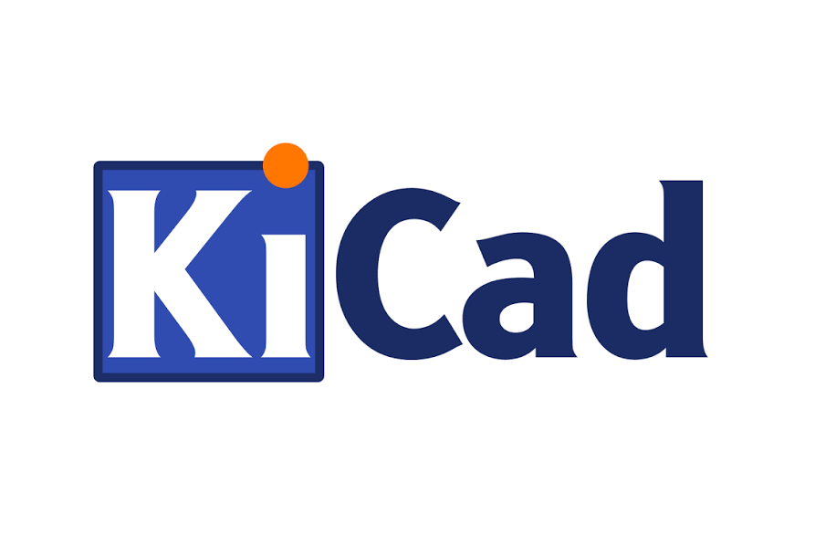
Desenho de Hardware (PCI) e Desenho Técnico
Registro Profissional, NR-10 (Elétrica) e NR-35 (Altura)
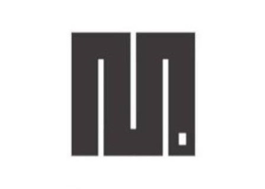
Prototipagem Rápida e Scripts Embarcados
Implantação deste Servidor Web, Registro de Domínio, VPS Cloud, stack LAMP, DNS, Permissões e Usuários
Conhecimentos: Administrador de Sistemas, AlmaLinux, DNS, HTTP Server, Banco de Dados
Coleta de Dados de Sensores em tempo real, armanezamento em banco de dados e visualização em Dashboard.
Conhecimentos: C/C++, Node.js, Javascript, MySql Database, Dashboards.
(Status: Em Desenvolvimento) Placa de Circuito Impresso para Automação residencial
Conhecimentos: Kicad, Eletrônica Analógica, Eletrônica Digital.
Escolha o canal de sua preferência.